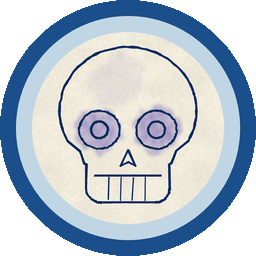
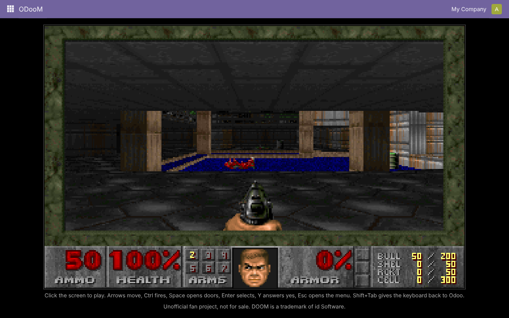
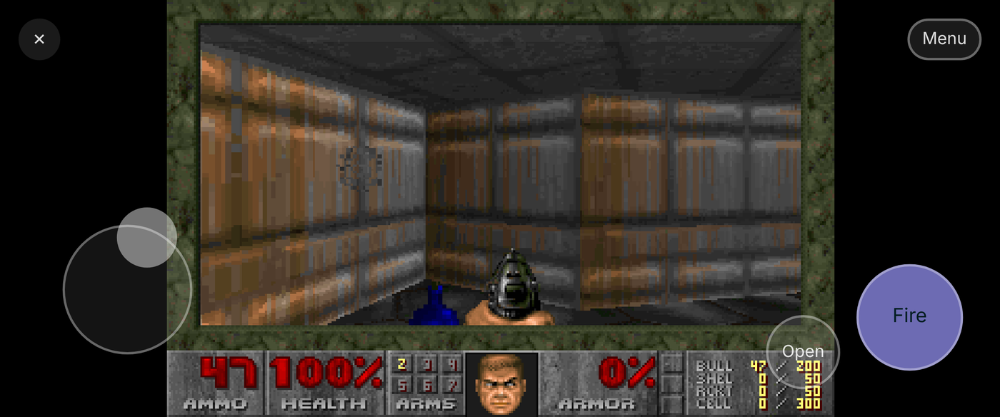

Doom, inside Odoo 19. On your desktop and on your phone.
Free, unofficial fan project
Install ODooM and a new app appears in your Odoo menu. Open it and the shareware episode of Doom starts right there, inside the Odoo window. The game runs in your browser as WebAssembly, so the module adds no models and no business data: just one menu item and its action.

Click the game, then use the arrow keys to move, Ctrl to fire, Space to open doors, Enter to select, Y to answer yes and Esc for the menu. Shift runs and 1 to 7 pick a weapon. Keys stay inside the game, so Odoo's own shortcuts do not get in the way; Shift+Tab gives the keyboard back to Odoo.
The game covers Odoo's screen. Put your left thumb on the lower left for a joystick and use the big Fire button on the right, which also picks menu items and answers yes. Open sits above it, and Menu and the button back to Odoo are at the top. Turn the phone sideways for a bigger picture: on Android the game then goes full screen, on iPhone Safari's own bars stay.

There is no sound, and no weapon switching on touch screens: Doom switches to a new weapon when you pick it up.
ODooM is an unofficial, non-commercial fan project. It is free and will stay free. It has no connection to, and is not endorsed by, id Software, ZeniMax Media, Bethesda Softworks, Microsoft or Odoo S.A.